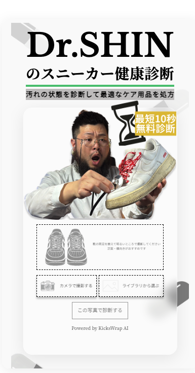
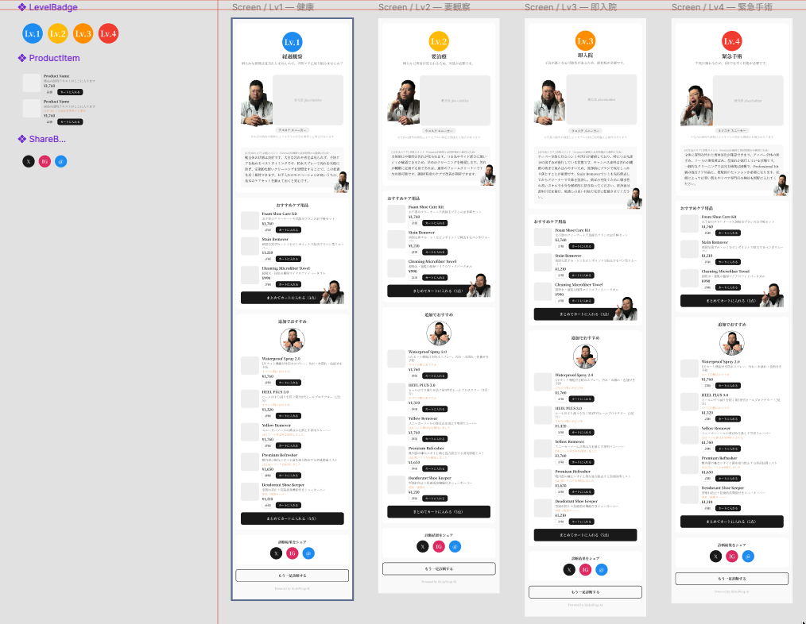
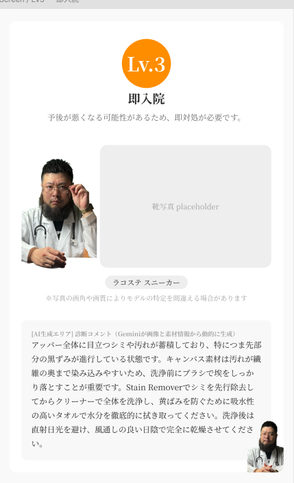
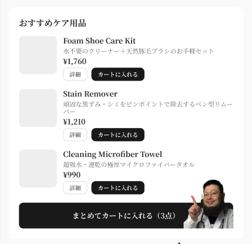

靴のケアは日常的な習慣として根づいていない。KicksWrapのMVVには「お手入れを日常に浸透させる」という軸があるが、その前段階に大きな壁があった。靴を洗いたい気持ちはある。ただ、自分の靴がどういう状態で、何が最適なのかが判断できない人が多かった。競合を見ても、ケア方法のHOWTOは存在する。なかったのは、HOWTOに辿り着く前の入口だった。
flow
HOWTOはあるが、HOWに立つまでの導入提案がなかった。
why
靴のケアは日常的な習慣として根づいていない。KicksWrapのMVVには「お手入れを日常に浸透させる」という軸があるが、その前段階に大きな壁があった。靴を洗いたい気持ちはある。ただ、自分の靴がどういう状態で、何が最適なのかが判断できない人が多かった。競合を見ても、ケア方法のHOWTOは存在する。なかったのは、HOWTOに辿り着く前の入口だった。
how
質問形式を捨てた
スマホで写真を撮る、それだけで完結する設計に振り切った。何を素材と言うのか、どのくらい汚れているのかを言語化させる手間が、そもそも靴ケアに距離を置いている人の前に立ちはだかる。写真1枚で自動判定する方式は、その障壁を取り除くための選択だった。
ナレッジに厚みを持たせた
素材と汚れのクロスパターンだけでは単純すぎる。KicksWrapがクリーニング代行で蓄積してきた洗い方の注意や素材ごとの留意点を、一律のナレッジとして構造化した。診断の精度は、このデータの厚みにかかっている。
UIは協調に振った
当初は近未来的なビジュアルを考えた。ただ先方のストアを見ると、情報を大きく丁寧に置くことを重視している。UIを浮かせるより、ストアの世界観に溶け込む方が使い手にとって自然だった。提案するAIではなく、寄り添うAIとして位置づけることにした。




振り返り
UIをどこまでブランドに協調させるか、最後まで判断に時間がかかった。ツールとしての完成度と、ストアの世界観への馴染みを両立させることは、設計と実装を行き来しながら少しずつ決めていった。ローンチ後は計測と改善が本番だと思っている。ブランドの世界観を強くするためのサイト全体の改善に、このUIを基軸として活かしたい。